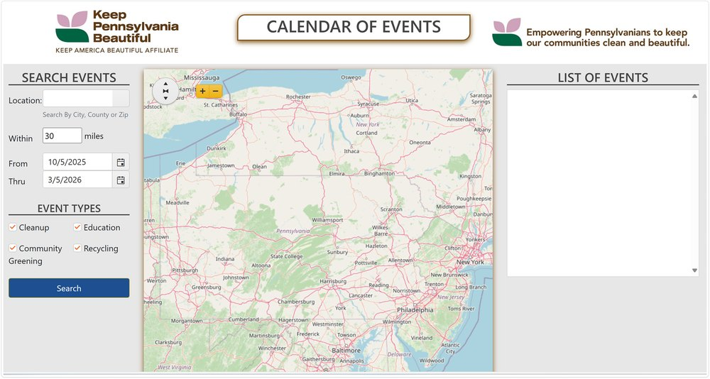
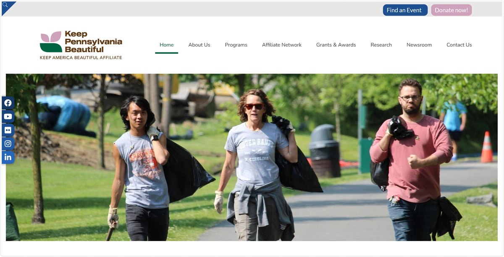
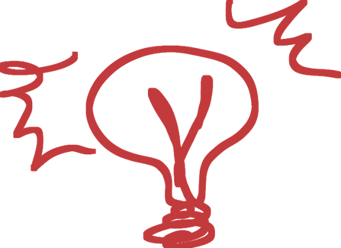
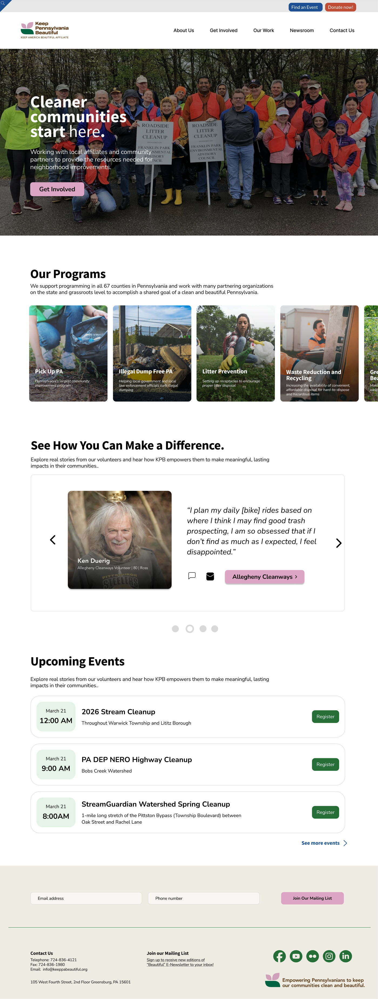

Keep Pennsylvania Beautiful (Home Page)
How can we empower KPB to share meaningful stories about the impact of their partners and volunteers?
Context
This is a group project that focuses on improving how new and potential volunteers understand and engage with Keep Pennsylvania Beautiful (KPB). Through think-aloud studies, interviews with volunteers and affiliates, expert insights, and secondary research, we found challenges with KPB’s current online presence and limited storytelling that fails to capture the full scope of the organization’s impact. For the design, I worked on the home page.


Design goals
- make volunteer opportunities easier to find and empower KPB to attract new volunteers
- highlight meaningful community and personal growth stories, deepening community engagement
- communicate KPB’s mission beyond environmental cleanup to effectively showcase the impact of their work
Research Process
-
Background
- Observations of KPB’s mission, values, and existing forms of communication
- Identified initial obvious gaps
-
Secondary
- Literature Review Focus on volunteer engagement and nonprofit communication
- Comparative Analysis Browsed other volunteer-driven organization websites
-
Primary
- Think Alouds First-time perspective
- Volunteer and Affiliate Interviews Experienced perspective
-
Synthesis
- Affinity Diagram
- Journey Map
Key Insights After the Research
- Unclear navigation, excessive text, and missing calls-to-action create friction that prevents new visitors from engaging with KPB’s programs.
- Volunteers and partners define “impact” through tangible community change and personal development that extends beyond environmental cleanup.
- KPB’s online presence positions them primarily as a cleanup organization, with limited emphasis on community impact.
- Visitors are most engaged by concise, story-driven content that highlights KPB’s community impact and offers clear pathways to participate.

We carried out ideation, prototyping, and iteration based on all the research and insights.
Soon to be updated! Happy to walk you through the full process over a call!
Final Design for the Home Page

Next steps
- Refine designs and more internal critique before hand-off
- Create Volunteer landing page
- Expand the design to be consistent across all KPB pages, reusing components from the provided webpages.